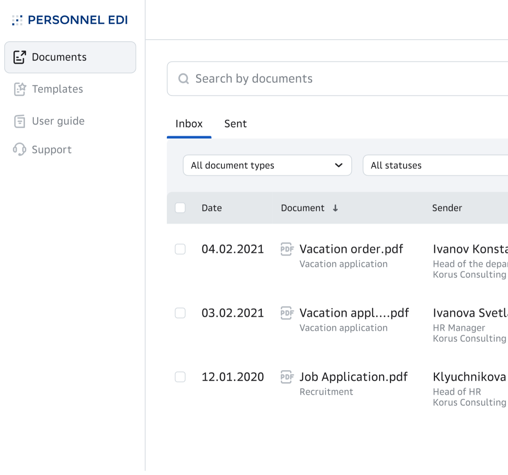
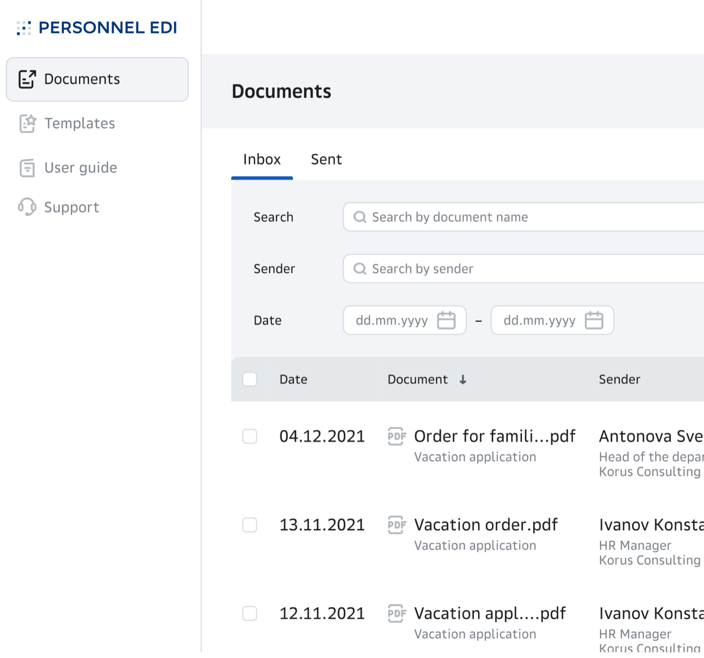
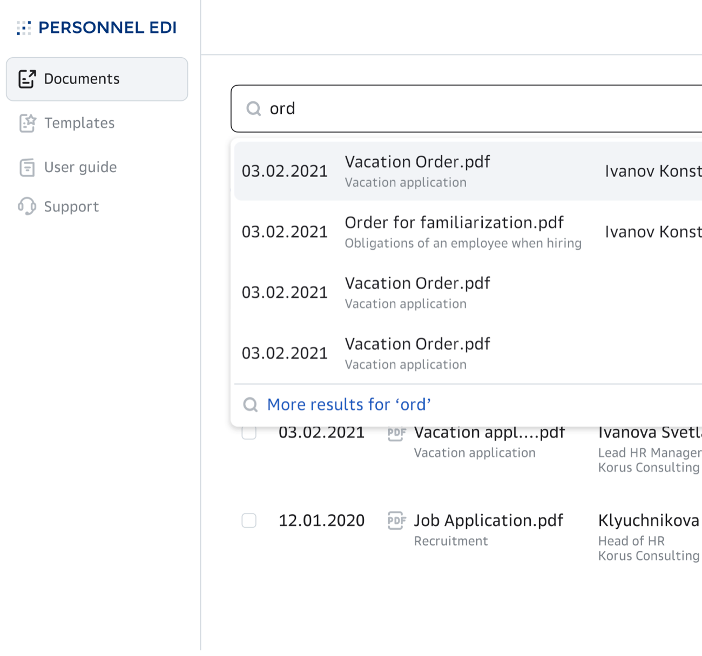
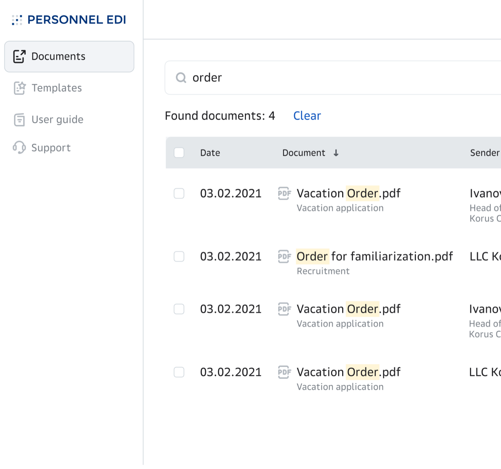

Document Search — redesigning a search that failed its first test
A focused redesign inside Personnel EDI. Usability testing showed the first search returned nothing and frustrated people — so I rebuilt how they find a document.
Overview
When I usability-tested Personnel EDI's MVP, one thing scored badly: search. People couldn't find documents they knew existed. Rather than patch it, I broke search out into its own redesign and rebuilt how people find a document from scratch. This is that deep-dive — the full product is the Personnel EDI case ↗.
The problem
People didn't remember which folder a document lived in. They searched the way they think — by who sent it, or what it's called. The first version fought that instinct instead of following it.
What the first launch got wrong
The first search had three problems that compounded:
- Two separate searches — one for incoming, one for sent — so you had to guess where to look first.
- Filters that hid — the options were mutually exclusive and took an extra click to even see.
- The result: dead ends — empty result screens, and people who gave up.
A usability test caught it early — which is exactly what a test is for.
The redesign
I rebuilt search around one idea: meet people where their memory is. A few changes did most of the work.
One search, filters in plain sight. I merged incoming and sent into a single search across every document, and brought the filters — name, sender, date — into view without an extra click.


Search as you type. Instant suggestions surface the document before you finish typing.

Show the match — and the way out. Each result highlights the query and shows a result count and the document's folder location, so you trust what you found. A prominent "create a new document" button turns a dead end into a next step.

Outcome
The redesign did what the first one couldn't: people found their documents. In testing, users said the search felt transparent — they could see what matched and where it lived — and the prominent search bar and create button made the whole page faster to move through.
What I learned
The real lesson wasn't about search. It was that a usability test is only worth running if you're willing to let it rewrite the design. Here it turned a quiet failure into the clearest single improvement in the product.